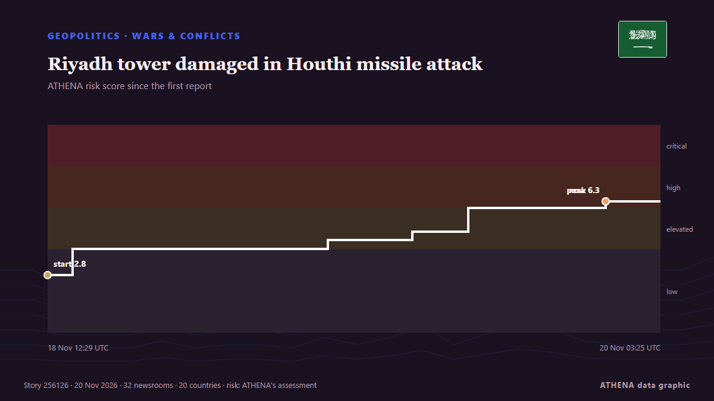

ATHENA Glaux Intelligence — Veille mondiale de l'information — chaque chiffre expliqué
Chaque titre, vérifié dans plusieurs pays.
ATHENA Glaux suit 635 médias dans le monde. Une information devient un événement vérifié seulement lorsque des médias indépendants la rapportent. Chaque événement indique qui l'a publiée en premier et un score de risque avec ses raisons.
Des articles arrivent de médias indépendants : quand deux se rejoignent sur la même histoire, un événement vérifié naît.
Comment ATHENA vérifie une information
- CollecterLes reportages arrivent de médias indépendants dans de nombreux pays.
- CroiserQuand deux médias se rejoignent sur la même information, elle devient un événement vérifié.
- ExpliquerChaque événement montre qui était le premier, jusqu'où il s'est propagé et pourquoi le risque est ce qu'il est.

GéopolitiqueRiyadh tower damaged in Houthi missile attack
Saudi authorities released an image appearing to show damage at the Public Investment Fund tower - the tallest in the capital- after a Houthi missile strike. de The New Arab
Les titres sont affichés en anglais, tels que publiés.
Russian national accused of spying on employees of Silicon Valley defense and technology company
A Russian man who prosecutors say was recruited by his government has been charged with stalking employees of a Silicon Valley technology and defense company in order to gather intelligence, the… de The Canadian Press (via CityNews)
Hegseth, in Caracas, announces US-Venezuela military partnership agreement
He said the cooperation will ramp up joint action against drug trafficking groups. de The Straits Times

Navires dans les détroits du monde en ce moment
Comptages AIS en direct. Touchez ou survolez une barre pour le détail.
Elon Musk says record $446m spending on US midterms was ‘pretty foolish’
The multi-billionaire also said he was "not Maga", distancing himself from the political movement linked to Trump. de BBC Business
Israel army says completed central Gaza ground operation
The Israeli military has announced the completion of its ground operation in central Gaza, near Al-Bureij and Nuseirat refugee camps. de Arab News
Gibson Dunn Wins $6.5B Global Freezing Injunction for Binance in Abu Dhabi Court After Crypto Heist
The order is among the first legal steps taken after the record-setting theft of crypto assets from Binance. de Law.com
Géopolitique, politique et sécurité
Plus ›Trump pushes decision on new Iran strikes into next year: ‘We’ve got time’
Trump had previously suggested Iran would be more willing to make a deal after the US midterms, which Republicans lost. de The Jerusalem Post
- Élections et politique
Mosque torched in Israel sparks political backlash against Netanyahu
- Diplomatie et sommets
US, China can help end Ukraine war, Trump tells Xi before trilateral with Putin
- Élections et politique
Brazil's Senate approves Lula's $10 billion fiscal package after costly election spending
- Guerres et conflits
Prince Harry: I’d rejoin the military to fight Russia
Économie, finance et marchés
Plus ›U.S. AI startup Anthropic floats shares on Nasdaq with record IPO
Luxury home sellers are offering multimillion-dollar mansions in exchange for Anthropic stock as the AI giant's IPO approaches. de Business Insider
- Prévisions et récession
Islam forecast to exceed Christianity as world's biggest religion by middle of next decade
- Actions, obligations et marchés
Anthropic valuation soars above £1.5 trillion in record stock market float
- Inflation et taux d'intérêt
Japan core inflation soars to highest this year as energy subsidy expiry pushes up consumer prices
- Actions, obligations et marchés
Stocks look to blockbuster Anthropic IPO to break losing streak
Commerce, industrie et infrastructures
Plus ›Sallaum Logistics opens inland customs bonded compound in the Port of Limburg, Genk
The new site extends the Sallaum Terminal in Antwerp inland reachable by river, rail and road Sallaum Logistics is opening. de Cyprus Shipping News
- Commerce et accords
Azerbaijan president begins 3-day visit to Vietnam
- Construction et infrastructures
Russia cannot dictate 'unrealistic security demands': UK premier
- Construction et infrastructures
A third Ukrainian strike in 4 days halts rail traffic on Russia's Kerch Bridge to Crimea
- Transport maritime et ports
Egypt, Libya sign cooperation agreements after talks in Cairo
Énergie, ressources et environnement
Plus ›Xi wants stronger bonds with Australia as Albanese defends Putin rebuke
“I made very clear to President Putin directly yesterday that he needs to stop his war, and he needs to stop it now,” Albanese said. de Sydney Morning Herald
Technologie, IA et cybersécurité
Plus ›Trump ousts cyber director after tech outages spark criticism
The Trump administration has faced criticism over its response to the tech outages. de The Straits Times
- Intelligence artificielle
Anthropic begins trading as $1.5 trillion company in biggest IPO ever
- Intelligence artificielle
Anthropic’s blockbuster debut tests Wall Street’s faith in AI boom
- Puces et calcul
US approved nearly 900,000 Nvidia and AMD AI chips for China. Raises more questions than answers.
- Intelligence artificielle
The seven Anthropic founders who are about to become multi-billionaires
Entreprises et investissement
Plus ›General Pants Co enters voluntary administration, putting hundreds of jobs at risk
Australian fashion chain becomes latest retailer in trouble after David Jones, Cue and Veronika Maine Get our breaking news email, free app or daily news podcast Youth fashion chain General Pants Co… de The Guardian
- Stratégie d'entreprise
APEC live: China releases leaders' statement after its disappearance from APEC website
- Stratégie d'entreprise
Sila Inks Long-Term Offtake Deal with Panasonic Energy to Power Domestic Battery Production
- Faillites et restructurations
Target for landmine-free Zimbabwe by 2030 threatened by aid cuts
- Secteurs et risques
Feds charge train robbers with stealing $22 million in sneakers, electronics
Accidents et urgences
Plus ›Six bodies recovered from rubble after explosion in residential building in Tbilisi - VIDEO - UPDATED - 5
Three among those trapped under rubble are children. de OC Media
- Accidents et urgences
Prisoner allegedly 'beaten and set on fire by his son' in vicious cell attack
- Accidents et urgences
Mike Lynch Yacht Crew Unaware of Wind Risks, UK Probe Finds
- Accidents et urgences
Helicopter was flying ‘extremely’ close to water before deadly crash in Florida, NTSB says
- Accidents et urgences
Doctors amputate weightlifter Hafizuddin's right arm after crash
Trois façons de lire aujourd'hui
Commencez par celle qui convient à votre tempsÉvénements vérifiés
Classés selon l'ampleur de la couverture
- International News: Trump, Xi and Putin hold rare 3-way meeting in China105 médias · 50 paysRisque 5.2
- Trump bought up to $265,000 of Nvidia stock in September, disclosure shows144 médias · 47 paysRisque 4.5
- LPG Tanker Tara Gas Fire Extinguished in the Strait of Hormuz103 médias · 39 paysRisque 4.3
- Trump says meeting with N.K. leader will happen 'at some point': report74 médias · 33 paysRisque 3.5
- A brief history of Nvidia’s recent stock fluctuations58 médias · 28 paysRisque 3.6
Bureau d'analyse
Posez une question et lisez une évaluation argumentée d'un sujet majeur, avec ce qui la démentirait.
Ouvrir le Bureau d'analyse ›Aujourd'hui en chiffres
| 05:00 | 490 |
|---|---|
| 06:00 | 574 |
| 07:00 | 563 |
| 08:00 | 610 |
| 09:00 | 419 |
| 10:00 | 567 |
| 11:00 | 344 |
| 12:00 | 498 |
| 13:00 | 671 |
| 14:00 | 562 |
| 15:00 | 687 |
| 16:00 | 590 |
| 17:00 | 491 |
| 18:00 | 668 |
| 19:00 | 400 |
| 20:00 | 701 |
| 21:00 | 618 |
| 22:00 | 654 |
| 23:00 | 536 |
| 00:00 | 452 |
| 01:00 | 477 |
| 02:00 | 406 |
| 03:00 | 449 |
| 04:00 | 688 |
Risque des événements du jour
Signaux émergents
- Risque en hausse · ActifThere is no going back ‘to the way it was before’ the Iran war’s energy shock, IEA says
- Hausse soudaine · ActifRohingya
- Hausse soudaine · ActifWilling
- Hausse soudaine · ActifGreenland
- Hausse soudaine · ActifAnthropic's
Restez informé
ATHENA Weekly Risk Picture
Les plus grands risques géopolitiques, économiques et maritimes de la semaine, recoupés et notés.
Chaque vendredi à 8 h (heure d'Athènes) · gratuit · en anglais
S'abonner gratuitementATHENA sur Telegram
Les nouvelles dès leur publication : les événements urgents de risque 6 ou plus, un récapitulatif horaire, les mises à jour des suivis de risque et le briefing quotidien à 10 h.
Gratuit · publications en anglais · désinscription à tout moment
Rejoindre le canalL'inscription est gérée par beehiiv avec double confirmation : rien de ce que vous saisissez n'est envoyé à ATHENA, et chaque numéro contient un lien de désinscription.
Suivi des risques
Plus ›Risques mondiaux — semaine 47, 2026 (16–22 nov.) ›